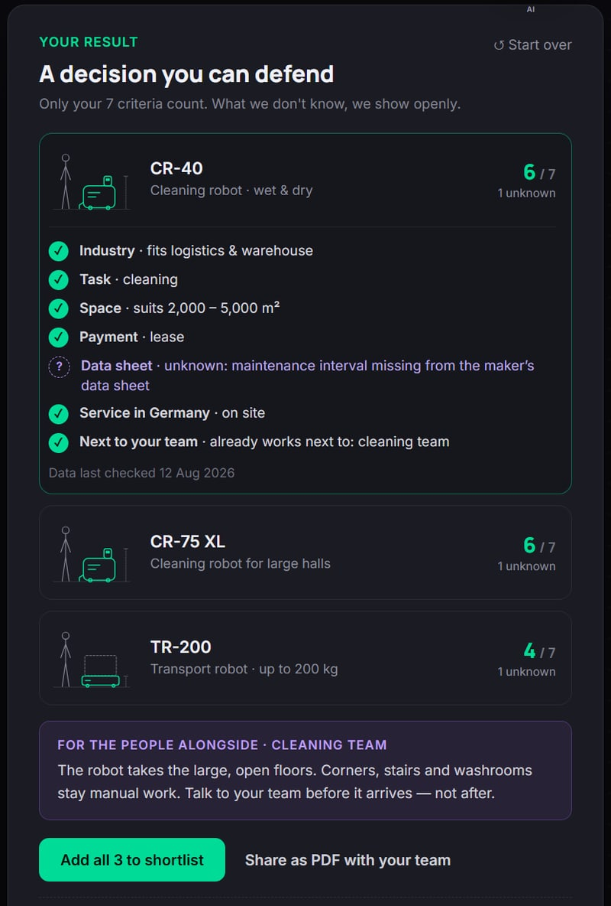

Alongside
UX Research & Design · Internship project · 2026
A comparison site for service robots, redesigned around a question nobody was asking: who will work next to it?
The brief
During a UX internship I worked on a platform that helps businesses compare and buy service robots — for cleaning, serving, transport and reception. Its buyers are rarely engineers. They are facility, hotel and care managers choosing a machine they cannot fully judge. The company is anonymised here; the name, the makers and all robot data are invented.
What I heard, and what changed
I ran four user interviews and sorted feedback from partner agencies. Each change in the prototype answers something I heard.
- Buried. One participant scrolled seven times before reaching the matching tool. The needs check now opens the page.
- One answer only. Businesses work in several areas and pay in several ways; the form allowed one. Every question takes several answers.
- Too much, and blank. Comparisons listed over a hundred specs, and empty fields looked like missing work. Seven criteria. What is unknown is marked, not hidden.
- Wrong size. Product photos made large robots look small. Each robot is drawn next to a person, with its height.


The question I added
Who works next to the robot?
A robot changes the work of the cleaner, the nurse and the waiter beside it, yet the site treated it as a product in a basket. The last step of the needs check asks about them, and the result answers with a short note for that team: what the robot takes over, what stays with people, and when to talk to them.
Tensions
Not problems the design solves. Tensions it holds open, and keeps visible.
- NeutralPaid The site promises neutrality and earns from enquiries. The result says so, in one line.
- ConfidentHonest Hiding the unknowns would look surer. Showing them is what lets the decision hold.
- NoviceExpert One page for the manager who wants an answer and the engineer who wants the data sheet.
- ProductColleague Bought like a machine, lived with like a co-worker.
Reflection
Most of my work is speculative. Here the task was clarity and conversion, and what I brought was the habit of asking who else is in the room. I built the prototype with Claude, which let me try an idea in hours instead of days — and taught me to test what only looks finished.
This is a prototype, not a result. It rests on four interviews and has not been tested with buyers. That would be the next step.

